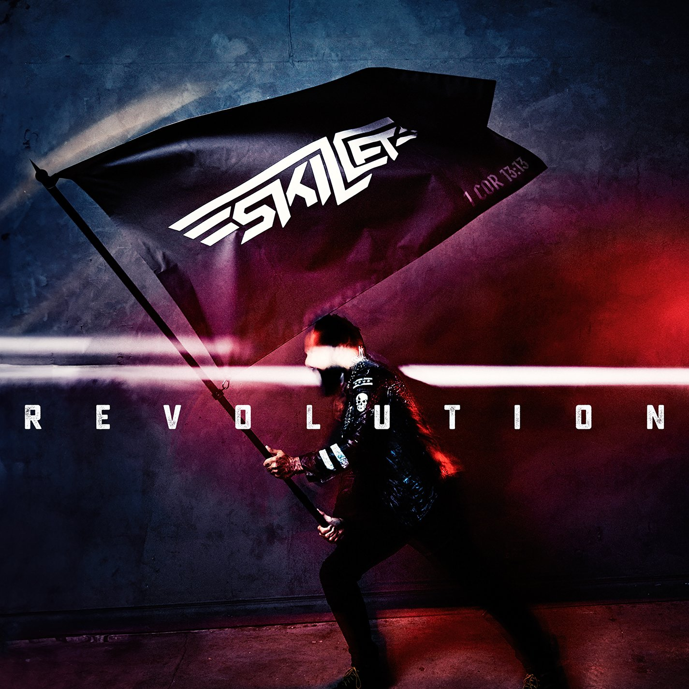

Formulador
Atualmente, sou formulador na Albaugh Brasil, onde me tornei o mais recente operador a conquistar um cargo efetivo no setor de formulação.
Concurseiro
Fui aprovado e convocado no curso de fuzileiros navais da marinha de guerra do Brasil no ano de 2024.

Música
Skillet é a minha banda favorita! Formada em 1996 em Tennessee, essa renomada banda americana de rock cristão é composta por John Cooper, Korey Cooper, Seth Morrison e Jen Ledger.
Fé
Nascido e criado em lar cristão, acredito em Jesus e no criacionismo. João 14:6 Eu sou o caminho, a verdade e a vida.